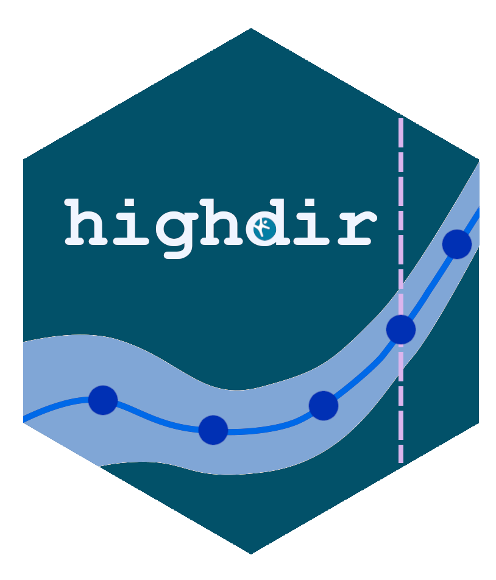
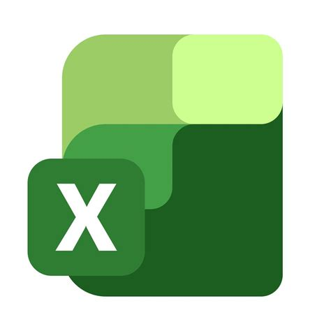
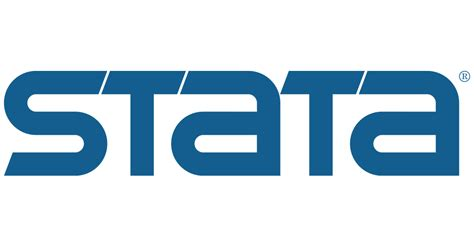
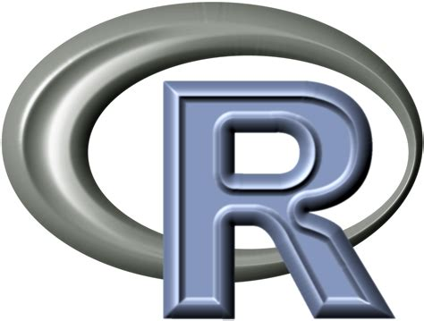
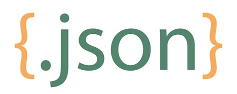
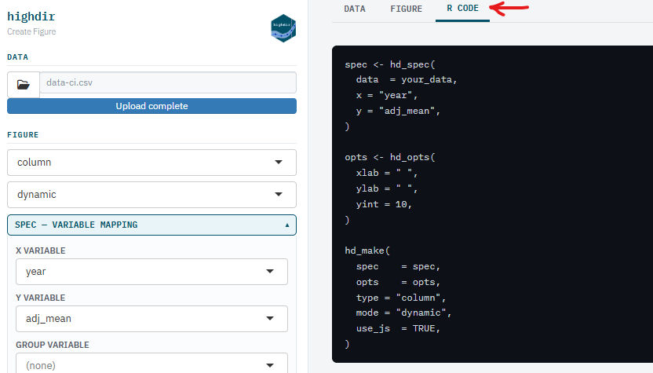
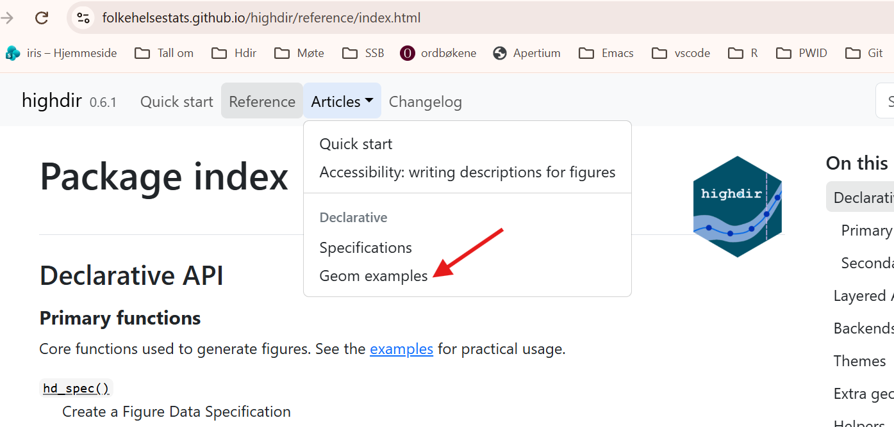
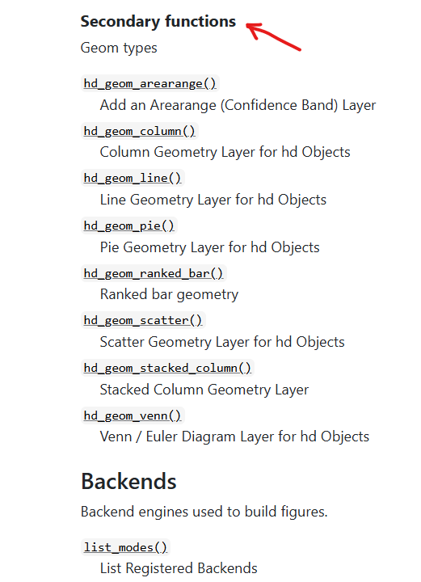
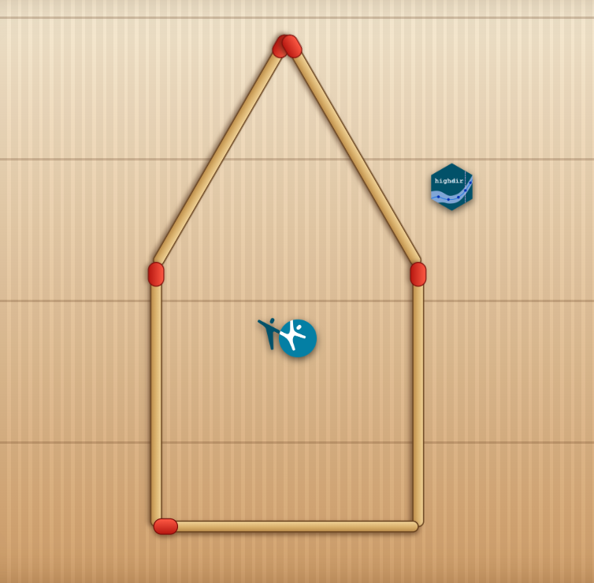

| alder | kjonn | pct | n |
|---|---|---|---|
| 18-24 | Male | 42 | 120 |
| 18-24 | Female | 38 | 115 |
| 25-34 | Male | 55 | 200 |
| 25-34 | Female | 61 | 210 |
| 35-44 | Male | 48 | 180 |
highdir
Datavisualisering etter Hdirs spesifikasjoner
Demo, tips️ og triks
Muligheter og potensial
Yusman Kamaleri
Workshop
20.10.2026


Hva er highdir?
- R-pakke for visualisering av statistikk og nøkkeltall
- Basert på Hdirs designprinsipper
- Kan produsere både statiske og dynamiske (interaktive) figurer
- Forenkler arbeider av standardiserte visualiseringer
Hva highdir ikke er
- Ikke et analyseverktøy
- Ikke et ETL- eller datavarehusverktøy (DAP)
- Ikke en backend- eller serverløsning
Forutsetninger for bruk
- Rensede og aggregerte data (ikke rådata)
- Data i tabellformat (CSV, Excel, JSON osv.)
- Minst én kategorivariabel og én tallvariabel
Data behandling og format




Fra data til figur
- Definer spesifikasjon (nødvendig)
hd_spec()- Definer utvalg (valgfritt)
hd_opts()- Generer figur
hd_make()- Eksporter resultat
hd_save()Figur typer
column, ranked_bar, line, scatter, arearange, pie, stacked_column, venn, (map)
Installasjon
# CRAN
install.packages("highdir")
# Github (dev versjon)
if(!require(remotes)) install.packages("remotes")
remotes::install_github("folkehelsestats/highdir")Demo 1
# Demo 1
# ------------------------------------------------------------------------------
library(data.table)
library(highdir)
survey <- fread("c://Users//ykama//Git-hdir//dataset//survey-data.csv")
spec_col <- hd_spec(survey, x = "alder", y = "pct", group = "kjonn", n = "n")
opts_col <- hd_opts(
title = "Alcohol use by age group and kjonn",
subtitle = "Source: Norwegian Directorate of Health",
ylim = c(0, 100),
yint = 20,
ylab = "Percentage (%)"
)
# Dynamisk (default)
fig <- hd_make(spec_col, "column", opts_col)Tips
Demo 2
# Demo 2
# ------------------------------------------------------------------------------
dt <- fread("c://Users//ykama//Git-hdir//dataset//region-data.csv")
spec <- hd_spec(dt, x = "fylke", y = "prosent", n = "n")
opts <- hd_opts(title = "Fylker i Norge",
subtitle = "Demo dataset",
flip = TRUE)
hd_make(spec, "ranked_bar", opts, vs = "Norge", aim = 50)
hd_make(spec, "ranked_bar", opts, vs = "Norge", aim = 50, mode = "static")Tips
geom_args("ranked_bar")Demo 3
Shiny app
hd_app()
Eksempler
Articles

Reference - Layered API

Hvorfor highdir?
- Dagens utfordringer
- Mange ulike måter å lage figurer på
- Avhengighet av enkeltpersoners kompetanse
- Forenkle ved eksport til HTML og PDF
Ja takk, begge deler
Kan få i pose og sekk ved å kjøre denne i en quarto fil
Hvordan highdir bidrar
- Standardisert utseende
- Gjenbrukbare løsninger, og noen ekstra f.eks skjermlesing
- Tettere integrasjon med eksisterende R-verktøy
- Åpne for muligheter at flere kan bidra og vedlikeholde
Gevinster
- Økt produktivitet
- Bedre kvalitet og konsistens
- Lavere opplæringsterskel for nye brukere
- Større grad av gjenbruk
- Mulighet for bredere bruk i organisasjonen
- Bedre samspill med eksisterende Hdir-løsninger
Veien videre
- Videreutvikling av pakken
- Standardisering av figurer og maler
- Bedre støtte for PDF-eksport
- Dokumentasjon og opplæringsmateriell
- Innspill fra brukermiljøet
Quiz
Skanne QRcode og integrer highdir ☺️
